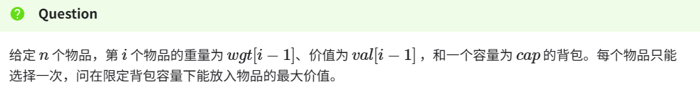
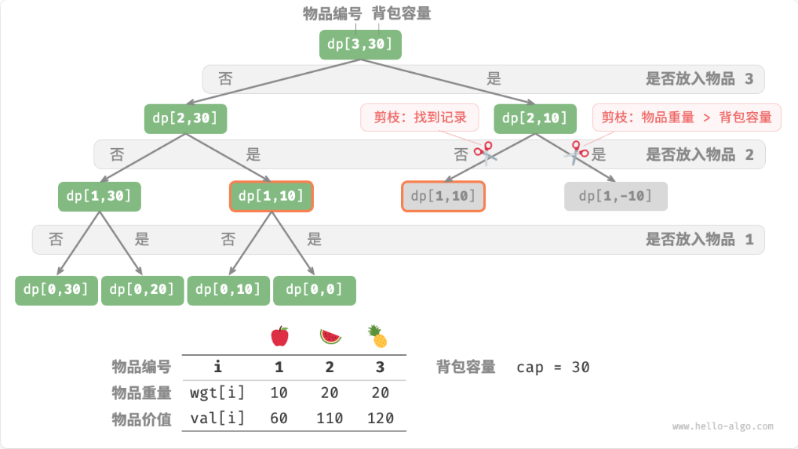

“自适应排序”是一种排序算法的特性，指的是算法能够根据输入数据的特定属性（如已经部分排序的程度）来调整其性能。具有自适应性的排序算法在处理部分已排序的数据时，会比在处理完全随机数据时表现出更高的效率。
刷题20240310 1.问题描述
给定一个长度为n的数列，将这个数列按从小到大的顺序排列。1<=n<=200
输入格式
第一行为一个整数n。
1 2 3 4 5 6 7 8 9 10 11 12 13 14 15 16 17 18 19 20 21 22 23 24 25 26 27 28 29 30 31 32 33 #include <iostream> using namespace std;void bubbleSortPlus (int *nums,int length) for (int i = length-1 ;i>0 ;i--){ bool flags; for (int j=0 ;j<i;j++){ if (nums[j]>nums[j+1 ]){ swap (nums[j],nums[j+1 ]); flags = true ; } } if (!flags){break ;} } } int main () int arrayLength; cin>>arrayLength; int *myArray = new int [arrayLength]; for (int i=0 ;i<arrayLength;i++){ cin>>myArray[i]; } bubbleSortPlus (myArray,arrayLength); for (int i=0 ;i<arrayLength;i++){ cout<<myArray[i]<<endl; } delete [] myArray; return 0 ; }
❕动态数组的定义，内存释放
1 2 3 int *myArray = new int[length] delete[] myArray
刷题20240311 获取字符ASCII
1 2 3 string numHex = "39"; int num = numHex[i]-48;
刷题20240312 1.问题描述
输入格式 9、大写字母AF组成的字符串，表示要转换的十六进制正整数，每个十六进制数长度不超过100000。
输出格式
这题原本打算先将16进制转10进制，然后再转8进制，理论上是可以的，但是当16进制数很大时，整型就无法全部保存。下面是之前写的。
1 2 3 4 5 6 7 8 9 10 11 12 13 14 15 16 17 18 19 20 21 22 23 24 25 26 27 28 29 30 31 32 33 34 35 36 37 #include <iostream> #include <string> #include <vector> #include <sstream> using namespace std;string transHex (const string&numHex) { stringstream ss; ss << hex << numHex; unsigned long long decimal; ss >> decimal; string numOx; while (decimal) { int remainder = decimal % 8 ; stringstream ss2; ss2 << remainder; numOx = ss2.str () + numOx; decimal /= 8 ; } return numOx; } int main () int count; cin>>count; vector<string> numHex (count) ; for (int i=0 ;i<count;i++){ cin>>numHex[i]; } for (int i=0 ;i<count;i++){ cout<<transHex (numHex[i])<<"\n" ; } return 0 ; }
后面又看网上的，说先转2进制然后再转8进制
1 2 3 4 5 6 7 8 9 10 11 12 13 14 15 16 17 18 19 20 21 22 23 24 25 26 27 28 29 30 31 32 33 34 35 36 37 38 39 40 41 42 43 44 45 46 47 48 49 50 51 52 53 54 55 56 57 58 59 60 #include <iostream> #include <math.h> #include <map> using namespace std;int main () int n; cin>>n; while (n--){ string s; cin>>s; int len1 = s.length (); string res1="" ; for (int i=0 ;i<len1;i++){ switch (s[i]){ case '0' : res1 += "0000" ; break ; case '1' : res1 += "0001" ; break ; case '2' : res1 += "0010" ; break ; case '3' : res1 += "0011" ; break ; case '4' : res1 += "0100" ; break ; case '5' : res1 += "0101" ; break ; case '6' : res1 += "0110" ; break ; case '7' : res1 += "0111" ; break ; case '8' : res1 += "1000" ; break ; case '9' : res1 += "1001" ; break ; case 'A' : res1 += "1010" ; break ; case 'B' : res1 += "1011" ; break ; case 'C' : res1 += "1100" ; break ; case 'D' : res1 += "1101" ; break ; case 'E' : res1 += "1110" ; break ; case 'F' : res1 += "1111" ; break ; } } int len2=res1.length () ; switch (len2%3 ){ case 1 : res1 = "00" +res1; break ; case 2 : res1 = "0" +res1; break ; } string res2="" ; len2=res1.length (); for (int i=0 ;i<len2;i+=3 ){ string t = res1.substr (i,3 ); if (i==0 &&t=="000" ) res2+="" ; else res2 += (4 *((t[0 ])-'0' )+ 2 *((t[1 ])-'0' )+ ((t[2 ])-'0' ))+'0' ; } cout<<res2<<endl; } return 0 ; }
❗在C++语言中，substr函数是std::string类的成员函数，用于提取字符串的子串
1 2 3 string str = "Hello, world!" ; string sub = str.substr (7 , 5 );
❗有一个表示整数的数字 ，想要将其转换为对应的 ASCII 字符 ，可以简单地将其与字符 '0' 相加，这样就会得到对应的 ASCII 字符。
刷题20240312 10进制转16进制
1 2 3 4 5 6 7 8 9 10 11 12 13 14 15 16 17 18 19 20 21 22 23 24 25 26 27 28 29 30 31 #include<iostream> #include<string> using namespace std; int main(){ long long num; cin>>num; string strHex = ""; if(num == 0){ cout<<0; return 0; } while(num){ int n = num %16; if(n==10){strHex= 'A'+strHex; } else if(n==11){strHex= 'B'+strHex; } else if(n==12){strHex= 'C'+strHex; } else if(n==13){strHex= 'D'+strHex; } else if(n==14){strHex= 'E'+strHex; } else if(n==15){strHex= 'F'+strHex; } else{ char x = n+'0'; strHex = string(1,x)+strHex; } num = num/16; } cout<<strHex; return 0; }
1 2 //string构造函数来将字符 x 转换为一个字符串 string(1,charN)
问题描述
123321是一个非常特殊的数，它从左边读和从右边读是一样的。
1 2 3 4 5 6 7 8 9 10 11 12 13 14 15 16 17 18 19 20 21 22 23 24 25 26 27 28 29 30 31 32 33 #include<iostream> #include<string> using namespace std; int main(){ int num; cin>>num; for(int i=10000;i<=999999;i++){ int flag = 1; int count = i; int sum = 0; string str; while(count){ int a= count%10; sum+=a; char x = a+'0'; str = string(1,x)+str; count=count/10; } if(sum!=num){continue;} for(int i=0;i<str.length()/2;i++){ if(str[i] != str[str.length()-i-1]){ flag = 0; break; } } if(flag == 1){cout<<i<<endl; } } return 0; }
上面的方法是对每一个数字进行判断，比较慢。下面的方法直接找回文数字
1 2 3 4 5 6 7 8 9 10 11 12 13 14 15 16 17 18 19 20 21 22 23 #include<iostream> using namespace std; int main(){ int n; cin>>n; for (int i=1;i<=9;i++) for (int j=0;j<=9;j++) for (int k=0;k<=9;k++) if (2*i+2*j+k==n) cout<<i<<j<<k<<j<<i<<endl; for (int i=1;i<=9;i++) for (int j=0;j<=9;j++) for (int k=0;k<=9;k++) if (2*i+2*j+2*k==n) cout<<i<<j<<k<<k<<j<<i<<endl; return 0; }
问题描述
1221是一个非常特殊的数，它从左边读和从右边读是一样的，编程求所有这样的四位十进制数。
输出格式
按从小到大的顺序输出满足条件的四位十进制数。
1 2 3 4 5 6 7 8 9 10 11 12 #include<iostream> using namespace std; int main(){ for(int i=1;i<=9;i++) for(int j=0;j<=9;j++) cout<<i<<j<<j<<i<<endl; return 0; }
问题描述
153是一个非常特殊的数，它等于它的每位数字的立方和，即153=1*1*1+5*5*5+3*3*3。编程求所有满足这种条件的三位十进制数。
输出格式
按从小到大的顺序输出满足条件的三位十进制数，每个数占一行。
1 2 3 4 5 6 7 8 9 10 11 12 13 14 15 16 17 18 19 #include<iostream> using namespace std; int main(){ for(int i=100;i<1000;i++){ int count = i; int sum = 0; while(count){ int num = count%10; sum = sum + num*num*num; count=count/10; } if(i==sum){cout<<i<<endl; } } return 0; }
问题描述
杨辉三角形又称Pascal三角形，它的第i+1行是(a+b)i的展开式的系数。
它的一个重要性质是：三角形中的每个数字等于它两肩上的数字相加。
输入格式
输入包含一个数n。
输出格式
输出杨辉三角形的前n行。每一行从这一行的第一个数开始依次输出，中间使用一个空格分隔。请不要在前面输出多余的空格。
1 2 3 4 5 6 7 8 9 10 11 12 13 14 15 16 17 18 19 20 21 #include <iostream> using namespace std;int main () int n; cin>>n; int lst[n+2 ]; for (int i=0 ;i<=n+1 ;i++){ lst[i]=0 ; } lst[1 ]=1 ; for (int i=1 ;i<=n;i++){ for (int j=i;j>0 ;j--){ lst[j]+=lst[j-1 ]; cout<<lst[j]<<" " ; } cout<<endl; } return 0 ; }
memset 是一个 C 标准库函数，用于将一块内存区域的前几个字节设置为特定的值。
问题描述
给出一个包含n个整数的数列，问整数a在数列中的第一次出现是第几个。
输入格式
第一行包含一个整数n。
第二行包含n个非负整数，为给定的数列，数列中的每个数都不大于10000。
第三行包含一个整数a，为待查找的数。
输出格式
如果a在数列中出现了，输出它第一次出现的位置(位置从1开始编号)，否则输出-1。
1 2 #include<math.h> abs()//求绝对值
刷题20240312 递归Fib
1 2 3 4 5 6 7 int fib(int n){ if(n<3){return 1;} else{ return fib(n-1)+fib(n-2);s } }
设置输出的小数
1 2 3 #include<iomanip> double s = 3.254534; cout<<fixed<<setprecision(3)<<s;//3.254
下面是统计一串字符里面出现次数最多的字母（小写），字母最多26个，输入可以用getchar();
1 2 3 4 5 6 7 8 9 int count[26]={0},max=0,i; char ch; while((ch=getchar())!='\n') count[ch-'a']++; for(i=1;i<26;i++) if(count[i]>count[max]) max=i; printf("%c\n%d",max+'a',count[max]); return 0;
算法动态规划20240315 动态规划将小问题的解汇集成大问题的答案
初探 问题：给定一个共有 n 阶的楼梯，你每步可以上 1 阶或者 2 阶，请问有多少种方案可以爬到楼顶？
爬到n阶，那么上一次必然是爬了1阶或者2阶，所以
1 2 3 4 5 6 7 8 9 10 11 12 13 14 15 16 17 18 19 20 21 22 23 24 25 26 27 28 29 30 31 32 #include<iostream> #include<vector> using namespace std; //给定一个共有 n 阶的楼梯， //每步可以上 1 阶或者 2 阶， //请问有多少种方案可以爬到楼顶？ void backtrack(vector<int> &choices, int state, int n,vector<int> &res){ //当爬到n阶时，方案数量加1 if(state == n){ res[0]++; } //遍历所有选择 for(auto &choice : choices){ if(state+choice > n){ continue; } backtrack(choices,state+choice,n,res); } } int main(){ int n; cin>>n; vector<int> choices = {1,2};//可以选择爬1，或2阶 int state = 0; //从第0阶开始 vector<int> res = {0};//使用res[0]记录方案数量 backtrack(choices,state,n,res); cout<<res[0]; return 0; }
数组vector 定义 ：
1 2 3 4 5 6 7 8 9 10 11 12 13 14 15 16 17 18 19 20 //T代表数据类型 vector<T> v1; vector<T> v2(v1) = vector<T>v2 = v1; //使用v2中所有元素初始化v1 vector<T> v3(n,val);//v3元素中包含了n个值为val的元素 vector<T> v4(n);//v4包含n个默认值初始化的元素 vector<T>v5{a,b,c,d};//使用a,b,c,d初始化v5 v.push_back(val);//向 vector 的尾端添加值为 val 的元素。 //注意：vector 不支持 push_front 操作。 v.pop_back(val);//删除尾元素，返回void。vector同样 不支持 pop_front 操作。 v.back();//返回最后一个元素的引用v.end(); v.front()://返回第一个元素的引用v.begin(); v.size();//求长度 min(v[0],v[1]);//比较求小 //二维数组,定义了n+1行,3列的数组，并且初始化为0 vector<vector<int>> dp(n+1 ， vector<int>(3,0));
动态规划问题特性
分治算法递归地将原问题划分为多个相互独立的子问题 ，直至最小子问题，并在回溯中合并子问题的解，最终得到原问题的解。
动态规划也对问题进行递归分解，但与分治算法的主要区别是，动态规划中的子问题是相互依赖的 ，在分解过程中会出现许多重叠子问题。
回溯算法在尝试和回退中穷举所有可能的解，并通过剪枝避免不必要的搜索分支。原问题的解由一系列决策步骤构成，我们可以将每个决策步骤之前的子序列看作一个子问题。
实际上，动态规划常用来求解最优化问题，它们不仅包含重叠子问题，还具有另外两大特性：最优子结构 、无后效性 。
这便可以引出最优子结构的含义：原问题的最优解是从子问题的最优解构建得来的 。
无后效性是动态规划能够有效解决问题的重要特性之一，其定义为：给定一个确定的状态，它的未来发展只与当前状态有关，而与过去经历的所有状态无关 。
以爬楼梯问题为例，给定状态 i ，它会发展出状态 i+1 和状态 i+2 ，分别对应跳 1 步和跳 2 步。在做出这两种选择时，我们无须考虑状态 i 之前的状态，它们对状态 i 的未来没有影响。
动态规划解题思路
如何判断一个问题是不是动态规划问题？
求解动态规划问题该从何处入手，完整步骤是什么？
问题判断： 如果一个问题包含重叠子问题、最优子结构，并满足无后效性，那么它通常适合用动态规划求解。然而，我们很难从问题描述中直接提取出这些特性。因此我们通常会放宽条件，先观察问题是否适合使用回溯（穷举）解决 。
在此基础上，动态规划问题还有一些判断的“加分项”。
问题包含最大（小）或最多（少）等最优化描述。
问题的状态能够使用一个列表、多维矩阵或树来表示，并且一个状态与其周围的状态存在递推关系。
相应地，也存在一些“减分项”。
问题的目标是找出所有可能的解决方案，而不是找出最优解。
问题描述中有明显的排列组合的特征，需要返回具体的多个方案。
动态规划的解题流程会因问题的性质和难度而有所不同，但通常遵循以下步骤：描述决策，定义状态，建立dp表，推导状态转移方程，确定边界条件等。
0-1 背包问题


刷题20240328 礼物 1 2 3 4 5 6 //取消输入输出缓存，加快cin、cout运算时间 ios::sync_with_stdio(false); //万能头文件 #include<bits/stdc++.h>
跳马 dps的理解：
明确结束的条件是什么，退出递归
边界条件是什么，比如迷宫的话就有墙
走入下一步之后的标记，然后进行“递”，以及“归”之后对之前的标记的取消
将代码优化，
刷题20240329 试题 算法训练 数的潜能 算法学习笔记(4)：快速幂 - 知乎 (zhihu.com)
20240331 试题 算法训练 娜神平衡 1 2 3 4 5 6 7 8 9 10 #include<algorithm> abs();//求绝对值 vector<int> vec; vec.size()//求长度 sort(vec.begin(), vec.end())//对vec进行排序 vec.push_back(i); //尾部添加i vec.pop_back();//删除尾部元素